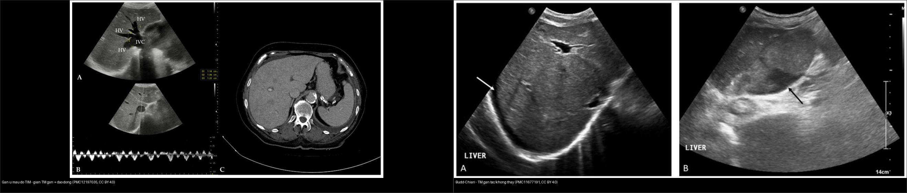
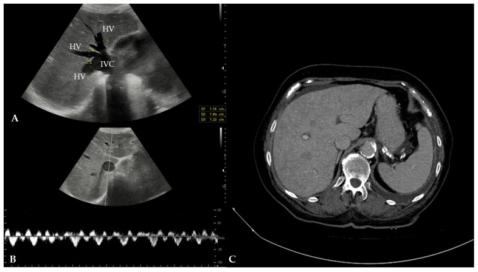
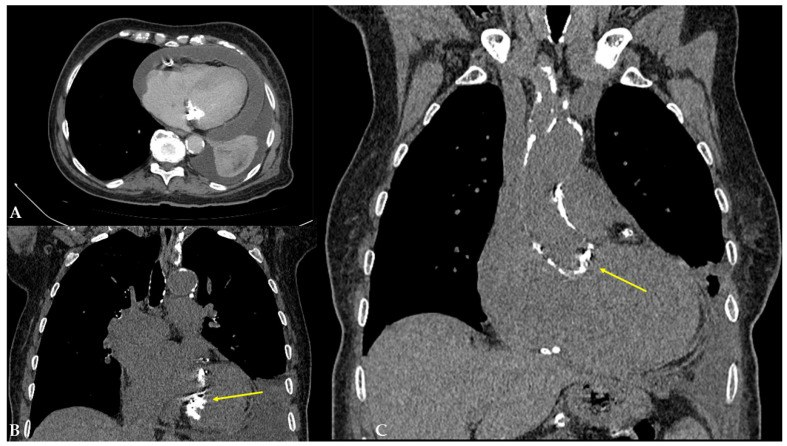
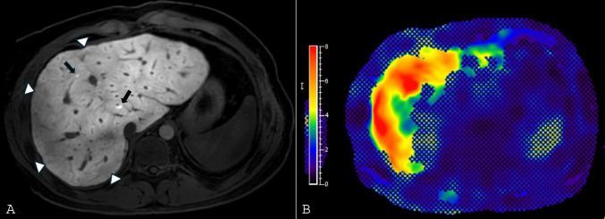
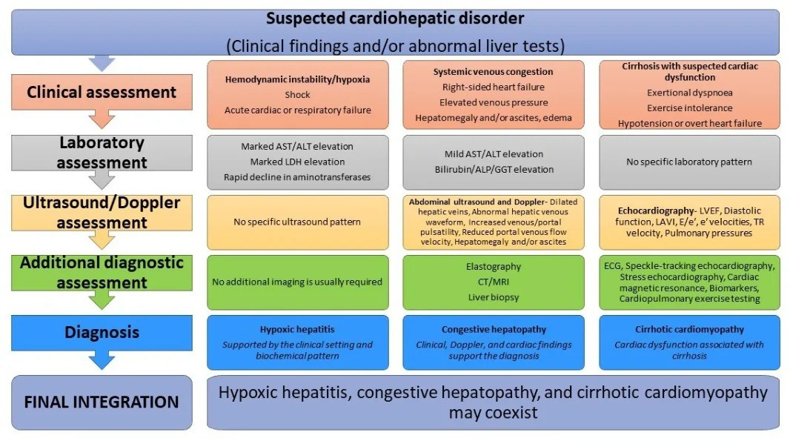
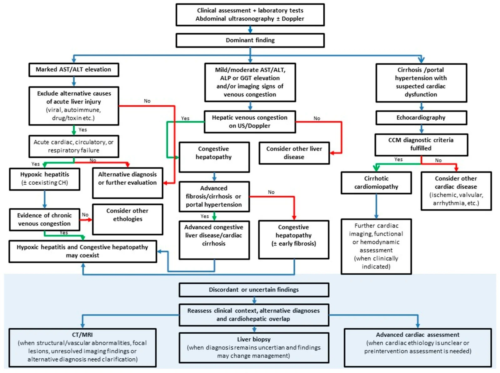

127 — Gan tim (cardiac hepatopathy) & tăng áp cửa do tắc nghẽn dòng ra: chẩn đoán phân biệt "gan ứ máu" khi KHÔNG có huyết khối / Cardiac hepatopathy & post-sinusoidal portal hypertension
Tags: pattern:gan-u-mau vung:gan vung:mach-cua score:VExUS score:MELD-XI protocol:Doppler-TM-gan incidentaloma:gan-to
Mức chắc chắn (certainty): tổng hợp y văn (literature synthesis) — nhóm tự biên từ y văn mở (Cureus 2024 PMC11110487; Reports 2025 PMC12197035; IJMS 2023 PMC10649397; Diagnostics 2026 PMC13664619; Current Cardiology Reports 2026 PMC13186934; Life 2026 PMC13027775; Medicina 2024 PMC11677191), số liệu lấy nguyên từ bài gốc.
Câu hỏi gốc của bài: đứng trước một gan to + giãn tĩnh mạch gan (hepatic vein) và tĩnh mạch chủ dưới (inferior vena cava – IVC) nhưng KHÔNG có huyết khối trong lòng mạch, làm sao phân biệt gan tim (cardiac hepatopathy) với Budd-Chiari, tắc xoang gan (sinusoidal obstruction syndrome – SOS), xơ gan và huyết khối tĩnh mạch cửa (portal vein thrombosis – PVT) — và vì sao tim phải được khám trước khi kết luận "bệnh gan". Điểm tựa giải phẫu: gan nhận máu kép (75% tĩnh mạch cửa + 25% động mạch gan) nhưng chỉ có MỘT đường ra là tĩnh mạch gan. Vì vậy tắc nghẽn dòng ra ở tim làm ứ máu toàn gan, còn tắc dòng vào chỉ làm teo vùng tương ứng.
1. Tổng quan bệnh học – cơ chế hình ảnh
A. Phổ bệnh "gan tim" (cardiac hepatopathy) — 4 thể nằm trên một trục:
- Gan ứ máu mạn (congestive hepatopathy – CH): hậu quả của suy tim phải (right heart failure) hoặc bất kỳ nguyên nhân nào làm áp lực nhĩ phải (right atrial pressure – RAP) / áp lực tĩnh mạch trung tâm (central venous pressure – CVP) tăng kéo dài (hẹp hở van ba lá, hẹp van hai lá, viêm màng ngoài tim co thắt, tăng áp động mạch phổi, tuần hoàn Fontan).
- Viêm gan thiếu ôxy (hypoxic hepatitis / ischemic hepatitis – "shock liver"): suy tim xuôi dòng (forward failure) gây giảm tưới máu + giảm ôxy, hoại tử vùng trung tâm tiểu thùy (centrilobular necrosis), diễn tiến cấp tính.
- Xơ gan tim (cardiac cirrhosis): CH kéo dài → xơ quanh xoang (perisinusoidal fibrosis) → xơ gan, tăng áp cửa.
- Bệnh cơ tim xơ gan (cirrhotic cardiomyopathy): rối loạn chức năng tim ở người đã xơ gan (thể đảo chiều của trục tim–gan).
TẠI SAO hình ảnh lại như vậy (cơ chế – vật lý):
- Tĩnh mạch gan giãn: áp lực nhĩ phải tăng được truyền ngược dòng qua IVC → tĩnh mạch gan → xoang gan. Thành tĩnh mạch gan mỏng, chịu áp lực thấp, nên chỉ cần CVP tăng là giãn rõ (trong ca minh họa: đường kính tĩnh mạch gan 12–18 mm, IVC trong gan 31 mm) (PMC12197035).
- Dấu "sừng hươu" (deer horn sign) trên siêu âm: IVC trong gan giãn tạo "đầu hươu", các tĩnh mạch gan giãn tỏa ra tạo "sừng hươu" — dấu hiệu gợi ý CH khi thấy trên mặt cắt dưới sườn (PMC12197035).
- Mất dạng sóng ba pha (triphasic) của tĩnh mạch gan: bình thường dòng tĩnh mạch gan có 3 pha (sóng a = nhĩ thu, S = tâm thu thất, D = tâm trương). Khi ứ máu: S < D → S đảo ngược → dạng đơn pha, vì áp lực nhĩ phải cao "đè" lên dòng chảy trong thì tâm thu (PMC13027775).
- Tĩnh mạch cửa đập theo nhịp tim (portal vein pulsatility): bình thường dòng cửa liên tục, đập < 30%; khi xoang gan ứ, dao động áp lực tim truyền ngược vào hệ cửa làm đập ≥ 50% (PMC13027775).
- Ngấm thuốc gan kiểu "nhục đậu khấu" (nutmeg liver) / mosaic: vùng ứ máu nặng (trung tâm tiểu thùy) ngấm thuốc chậm và kém hơn vùng còn tưới máu, nên thì cửa/muộn có dạng lưới/khảm không đồng nhất; thì động mạch có thể thấy thuốc trào ngược sớm vào IVC và tĩnh mạch gan (PMC10649397). Đây là hệ quả huyết động, không phải nốt u.
- Thùy đuôi phì đại (caudate lobe hypertrophy): thùy đuôi dẫn lưu trực tiếp vào IVC bằng các tĩnh mạch ngắn riêng nên né được ứ máu và phì đại bù trừ — gặp ở cả gan tim và Budd-Chiari, nên không dùng một mình để phân biệt (PMC10649397).
- Cổ trướng tim (cardiac ascites): áp lực xoang gan tăng → dịch thoát vào ổ bụng; dịch giàu protein vì hàng rào xoang bị phá vỡ. Do đó SAAG > 1,1 g/dL, protein dịch ≥ 2,5 g/dL, LDH và hồng cầu trong dịch tăng — khác cổ trướng xơ gan (protein < 2,5 g/dL) (PMC13664619).
Ngưỡng định lượng mấu chốt (Argon – cửa 1):
- CH gặp ở 20–30% bệnh nhân suy tim mạn (CHF) (PMC11110487); bilirubin thường < 6 mg/dL, tăng nhiều hơn gợi ý suy gan cấp (PMC11110487).
- Xơ gan sau Fontan ~43% ở thời điểm 30 năm sau mổ (PMC13186934).
- Viêm gan thiếu ôxy: AST/ALT tăng > 10–20 lần giới hạn trên (ULN), LDH tăng mạnh, giảm nhanh > 50% trong 48 giờ sau khi tái lập huyết động (PMC13664619).
- VExUS (Venous Excess Ultrasound Score): IVC ≥ 2,0 cm + giảm xẹp theo nhịp thở; IVC > 2,1 cm + xẹp < 50% tương ứng RAP 10–20 mmHg; IVC < 2,1 cm + xẹp > 50% tương ứng RAP 0–5 mmHg (PMC13027775).
- Điểm tiên lượng: MELD-XI, ALBI, MELD 3.0, Child–Pugh; MELD-XI dùng được khi bệnh nhân dùng chống đông (không phụ thuộc INR) (PMC10649397).
2. Mẫu hình + chẩn đoán phân biệt theo tầng tắc nghẽn (Gamut)
Gamut theo TẦNG tắc nghẽn của tăng áp cửa (đây là chìa khóa định vị):
- Tầng TRƯỚC XOANG (pre-sinusoidal): huyết khối tĩnh mạch cửa, huyết khối tĩnh mạch lách, sán máng (schistosomiasis), rối loạn mạch máu xoang cửa (porto-sinusoidal vascular disorder – PSVD), dò động–tĩnh mạch. Tĩnh mạch gan KHÔNG giãn, gan thường không to.
- Tầng XOANG (sinusoidal): xơ gan, SOS/VOD, viêm gan. Tĩnh mạch gan bình thường hoặc khó thấy, gan to nhẹ.
- Tầng SAU XOANG / SAU GAN (post-sinusoidal / post-hepatic): gan tim (suy tim phải, bệnh van ba lá, viêm màng ngoài tim co thắt, Fontan), Budd-Chiari (tắc tĩnh mạch gan/IVC). Tĩnh mạch gan ± IVC giãn hoặc không thấy tùy nguyên nhân.
Gamut "gan to + giãn tĩnh mạch gan, KHÔNG huyết khối" theo bối cảnh:
- Tim phải to + tĩnh mạch cổ nổi + phù + gan đập theo nhịp tim: suy tim phải, hở van ba lá, tăng áp phổi.
- Mạch nghịch thường (pulsus paradoxus) + tiếng cọ màng tim + vôi hóa màng ngoài tim: viêm màng ngoài tim co thắt (constrictive pericarditis) — nguyên nhân "giả xơ gan" kinh điển.
- Bệnh nhân trẻ đã mổ Fontan: bệnh gan liên quan Fontan (Fontan-associated liver disease – FALD).
- Suy tim cấp + sốc + AST/ALT tăng vọt: viêm gan thiếu ôxy (có thể đồng thời với CH).
- Gan to + cổ trướng + tuần hoàn bàng hệ + không có bệnh tim: xơ gan — nhưng tĩnh mạch gan không giãn.
- Gan to + đau hạ sườn + cổ trướng dịch tiết ở người trẻ: Budd-Chiari (bài 124).
Mnemonic "HEART" cho gan ứ máu do tim: Hepatic vein dilation (giãn tĩnh mạch gan) · Effusion (tràn dịch màng phổi/màng tim) · Ascites (cổ trướng giàu protein) · Right atrial pressure ↑ (CVP/RAP cao) · Tricuspid disease / tamponade physiology (bệnh van ba lá, chèn ép tim).
3. Bảng so sánh phân biệt (ma trận đối chiếu)
| Thực thể (entity) | Hình ảnh điển hình (US/CT/MRI) | Chốt vào (rule-in) | Chốt loại (rule-out) | Gợi ý xác nhận |
|---|---|---|---|---|
| Gan ứ máu do tim (CH) | Gan to; giãn tĩnh mạch gan + IVC; mất sóng ba pha (S < D → S đảo); tĩnh mạch cửa đập ≥ 50%; ngấm thuốc mosaic thì cửa/muộn; cổ trướng | Giãn tĩnh mạch gan/IVC + CVP cao + tim phải to + dòng tĩnh mạch gan bất thường nhưng KHÔNG tắc | Có khuyết/huyết khối trong lòng tĩnh mạch gan hoặc IVC → Budd-Chiari, không phải CH đơn thuần | Echo tim (EF, RAP, van ba lá, màng ngoài tim) + VExUS; CT/MRI gan đa thì |
| Viêm gan thiếu ôxy | Gan có thể to; không có dấu ứ máu đặc hiệu; CT thường bình thường hoặc phù nhẹ | AST/ALT > 10–20× ULN sau biến cố tim/phổi + LDH tăng + giảm nhanh > 50%/48 giờ | Tĩnh mạch gan giãn + CVP cao → thành phần ứ máu chiếm ưu thế | Lâm sàng + men gan; loại trừ virus/thuốc/thiếu máu |
| Budd-Chiari (BCS) | Thùy đuôi phì đại, phần gan còn lại ngấm không đồng nhất; tĩnh mạch gan không thấy/không dòng; bàng hệ "mạng nhện"; cổ trướng | Không thấy tĩnh mạch gan + bàng hệ trong gan + thùy đuôi to | Tĩnh mạch gan giãn đều, còn dòng (dù bất thường) → gan tim | Doppler → CT/MRI 3 thì → chụp tĩnh mạch gan/IVC |
| SOS/VOD | Gan to, lách to, cổ trướng, giãn tĩnh mạch cửa, KHÔNG giãn đường mật; thường sau ghép tế bào gốc < 21 ngày | Bilirubin > 2 mg/dL + ≥ 2 dấu (gan to, cổ trướng, tăng cân > 5%) trong 21 ngày sau ghép | Bệnh cảnh sau ghép + MRCP không giãn đường mật | Lâm sàng + Doppler; sinh thiết khi không điển hình |
| Xơ gan | Gan teo/bờ gồ ghề, nốt, lách to, bàng hệ, tĩnh mạch gan nhỏ/không giãn | Bờ gan gồ ghề + nốt + bàng hệ + tĩnh mạch gan không giãn | Tĩnh mạch gan giãn rõ + CVP cao → gan tim | Elastography (sau khi giảm ứ), CT/MRI, xét nghiệm nguyên nhân |
| Huyết khối tĩnh mạch cửa (PVT) | Khuyết thuốc trong lòng tĩnh mạch cửa, có thể bàng hệ dạng hang; tĩnh mạch gan bình thường | Khuyết thuốc trong lòng tĩnh mạch cửa | Tĩnh mạch cửa thông, chỉ tĩnh mạch gan giãn → gan tim | CT đa thì; phân biệt huyết khối lành/u (bài 124) |

Trái: gan ứ máu do tim — tĩnh mạch gan giãn, còn dòng (dù mất dạng ba pha). Phải: Budd-Chiari — tĩnh mạch gan tắc/không thấy, gan to + cổ trướng. Nguồn: Reports 2025 (PMC12197035) + Medicina 2024 (PMC11677191), CC BY 4.0. Ảnh ghép letterbox.Ba dấu hiệu hay bị đọc nhầm
- Thùy đuôi to KHÔNG phân biệt được gan tim với Budd-Chiari — cả hai đều có, vì cùng cơ chế "né" ứ máu. Phải nhìn lòng tĩnh mạch gan: giãn + còn dòng = tim; tắc/không thấy = Budd-Chiari.
- Ngấm thuốc mosaic ("nhục đậu khấu") không phải di căn/u: nó thay đổi theo thì và theo mức ứ máu; không có vỏ, không thải thuốc, không xâm lấn mạch.
- Gan to + men gan tăng nhẹ ở người suy tim ≠ "viêm gan do thuốc": luôn đo CVP/khám tĩnh mạch cổ và làm siêu âm Doppler tĩnh mạch gan trước khi gắn nhãn bệnh gan.
4. Protocol chụp + hệ phân độ/điểm chuẩn hóa
- Siêu âm bụng + Doppler là đầu tay (bắt buộc): đo IVC (đường kính, % xẹp), tĩnh mạch gan (đường kính, dạng sóng ba pha/biphasic/đơn pha/đảo S), tĩnh mạch cửa (tốc độ, chỉ số đập), tĩnh mạch trong thận (liên tục/gián đoạn/đơn pha); tìm cổ trướng, gan to, dấu sừng hươu.
- Siêu âm tim (echocardiography): bắt buộc để chốt nguyên nhân — EF, chức năng thất phải, RAP ước tính, van ba lá, màng ngoài tim (dày/vôi hóa, dấu suy giãn bất thường), áp lực động mạch phổi. EF bình thường không loại trừ HFpEF/viêm màng ngoài tim co thắt.
- CT gan đa thì (ĐM – cửa – muộn): xác định giãn IVC/tĩnh mạch gan, trào ngược thuốc sớm vào IVC thì ĐM, ngấm thuốc mosaic, thùy đuôi to, cổ trướng, tràn dịch màng phổi/màng tim; loại trừ huyết khối và u.
- MRI gan: T1/T2 fat-sat, DWI, chuỗi động mạch; MR elastography đo độ cứng gan (lưu ý ứ máu làm độ cứng giả tăng, phải đo lại sau khi giảm ứ); gadoxetate thì gan mật đánh giá chức năng và nốt FNH-like.
- Phân độ VExUS (0–3): Grade 0 = IVC < 2 cm; Grade 1** = IVC ≥ 2 cm + không có bất thường Doppler "nặng"; Grade 2 = IVC ≥ 2 cm + 1 bất thường nặng; Grade 3 = IVC ≥ 2 cm + ≥ 2 bất thường nặng. Bất thường "nặng" gồm: đảo dòng tĩnh mạch gan, **đập tĩnh mạch cửa > 50%, mất dòng tâm thu tĩnh mạch trong thận (đơn pha) (PMC13027775).
- Điểm tiên lượng: MELD-XI (không dùng INR → phù hợp bệnh nhân chống đông), ALBI, MELD 3.0, Child–Pugh; theo dõi bilirubin, albumin, creatinine, INR, tiểu cầu.
- Xử trí nguyên tắc: điều trị nguyên nhân tim (giảm thể tích, lợi tiểu, kiểm soát nhịp/van, can thiệp màng ngoài tim, tối ưu Fontan); không dùng thuốc hạ áp gan khi chưa đánh giá huyết động; xơ gan tim tiến triển → cân nhắc ghép tim ± ghép gan đồng thời (đánh giá đa chuyên khoa).
flowchart TD
A[Gan to + men gan bat thuong o benh nhan tim] --> B{Men gan tang the nao?}
B -->|AST/ALT > 10-20x ULN, giam nhanh| C[Viem gan thieu oxy - xu tri huyet dong]
B -->|Tang nhe + bilirubin < 6 mg/dL| D[Siêu am Doppler TM gan + IVC]
D --> E{TM gan gian + con dong?}
E -->|Co| F[Gan u mau do tim - VExUS + Echo tim]
E -->|Khong thay / tac| G[Budd-Chiari - CT/MRI + chup TM gan]
F --> H{CVP/RAP cao + benh tim phai?}
H -->|Co| I[Dieu tri nguyen nhan tim + theo doi xo gan tim]
H -->|Khong ro| J[Echo tim / MRI tim - tim viem mang ngoai tim co that, HFpEF, Fontan]
I --> K{Co xo gan / tang ap cua?}
K -->|Co| L[Danh gia ghep tim ± ghep gan]
K -->|Khong| M[Theo doi dinh ky VExUS + men gan]
5. Biến thể bình thường và cạm bẫy
- IVC giãn do nghiệm pháp Valsalva / nín thở — luôn đo lại khi thở đều; giãn "giả" khi bụng căng, thai kỳ, béo phì.
- "Giả huyết khối" do hiện tượng dòng chảy (flow artifact) trong tĩnh mạch gan/IVC trên MRI/CT: khuyết thuốc thay đổi giữa các thì, không có viền ngấm, không phì đại mạch → không phải huyết khối thật.
- Tĩnh mạch gan không thấy trên CT ≠ Budd-Chiari: xơ gan teo, gan thoái hóa mỡ nặng, hoặc thì chụp chưa đúng cũng làm khó thấy; phải có bàng hệ + thùy đuôi to + đảo dòng mới quy cho BCS.
- Elastography giả tăng trong đợt ứ máu cấp: độ cứng gan có thể giảm rõ sau khi lợi tiểu/giảm ứ → không chẩn đoán xơ gan chỉ dựa vào một lần đo khi đang phù.
- "Gan tim" có thể che lấp bệnh gan nền: bệnh nhân suy tim vẫn có thể có xơ gan, viêm gan virus, hoặc HCC; mosaic enhancement dễ làm bỏ sót nốt thật → luôn đọc đa thì và so phim cũ.
- Cạm bẫy mặt cắt (bắt buộc – Argon cửa 4): dịch màng phổi vs cổ trướng. Cổ trướng đẩy chân cơ hoành (crus) ra ngoài, không len vào vùng trần gan (bare area), bao quanh gan/ruột; tràn dịch màng phổi đẩy crus vào trong, len vào bare area, có meniscus. Cùng mật độ dịch — vị trí tương đối với crus/bare area mới chốt tên gọi.
- Cạm bẫy "thỏa mãn tìm kiếm": thấy gan to + cổ trướng là dừng ở "xơ gan" mà không khám tim — bỏ sót viêm màng ngoài tim co thắt (mổ được, chữa khỏi) và bệnh van ba lá.
6. Tự lượng giá — Blind Quiz ngay trên trang tĩnh (không cần app)
Ca 1 — Nam giới lớn tuổi, khó thở tăng dần, gan to, tĩnh mạch cổ nổi; siêu âm bụng dưới sườn.

- Gợi ý lâm sàng (clinical context): phù hai chân, cổ trướng, không sốt, không đau bụng.
- Câu hỏi: Dấu hiệu chính trên ảnh? Vì sao gọi là "dấu sừng hươu"? Ba chẩn đoán phân biệt và xét nghiệm chốt?
Bấm để hiện đáp án (findings + chẩn đoán)
- Dấu hiệu (findings): tĩnh mạch gan giãn 12–18 mm, IVC trong gan 31 mm; phổ Doppler tĩnh mạch gan mất dạng ba pha, có sóng a nổi bật; kèm gan to và cổ trướng. Hình trên còn có mặt cắt CT bụng cho thấy gan to, tĩnh mạch gan giãn.
- Chẩn đoán (diagnosis): gan ứ máu do suy tim phải (congestive hepatopathy) — "dấu sừng hươu" = IVC giãn ("đầu hươu") + tĩnh mạch gan giãn ("sừng hươu"). Cơ chế: CVP cao truyền ngược → giãn tĩnh mạch gan và mất dạng sóng ba pha.
- Phân biệt (differential): Budd-Chiari (tĩnh mạch gan tắc), xơ gan (tĩnh mạch gan không giãn), SOS/VOD (bối cảnh sau ghép).
- Xét nghiệm chốt: siêu âm tim (EF, RAP, van ba lá, màng ngoài tim) + VExUS; CT/MRI gan đa thì nếu cần loại trừ huyết khối/u.
- Nguồn ảnh: Ferenc T et al., Reports 2025, PMC12197035 (Fig. 2), CC BY 4.0.
Ca 2 — Cùng bệnh nhân, CT ngực không cản quang: vì sao "gan tim" lại do màng ngoài tim?

- Gợi ý: tĩnh mạch cổ nổi, gan đập theo nhịp tim, không có bệnh van rõ trên lâm sàng.
- Câu hỏi: Mô tả bất thường ngoài gan? Vì sao đây là nguyên nhân "mổ được" của gan tim?
Bấm để hiện đáp án (findings + chẩn đoán)
- Dấu hiệu (findings): tràn dịch màng tim lượng nhiều + vôi hóa lan rộng màng ngoài tim (mũi tên vàng), tim to; kèm tràn dịch màng phổi hai bên.
- Chẩn đoán (diagnosis): viêm màng ngoài tim co thắt (constrictive pericarditis) gây gan tim — màng ngoài tim dày/vôi hóa làm áp lực nhĩ phải tăng, truyền ngược xuống gan.
- Vì sao quan trọng: đây là nguyên nhân có thể chữa khỏi bằng phẫu thuật bóc màng ngoài tim, khác với suy tim cơ năng tiến triển không hồi phục. Bỏ sót = "xơ gan không rõ nguyên nhân" kéo dài.
- Cần làm tiếp: siêu âm tim (dấu suy giãn bất thường, septal bounce), MRI tim (dày/vôi hóa màng ngoài tim, dấu "thở bất thường"), hội chẩn tim–gan.
- Nguồn ảnh: Ferenc T et al., Reports 2025, PMC12197035 (Fig. 3), CC BY 4.0.
Ca 3 — Bệnh nhân 21 tuổi sau mổ Fontan, theo dõi định kỳ; MRI gan.

- Gợi ý: tuần hoàn Fontan, nhiều năm CVP cao; men gan dao động nhẹ.
- Câu hỏi: Bất thường trên MRI? Vì sao bệnh gan ở Fontan gần như phổ quát? Cần theo dõi gì?
Bấm để hiện đáp án (findings + chẩn đoán)
- Dấu hiệu (findings): ảnh A (thì gan mật) cho thấy gan ngấm thuốc không đồng nhất, các dải/tĩnh mạch giãn (mũi tên trắng) và nốt giữ thuốc kiểu FNH-like (mũi tên đen); ảnh B là bản đồ độ cứng MR elastography với vùng đỏ = độ cứng tăng.
- Chẩn đoán (diagnosis): bệnh gan liên quan Fontan (Fontan-associated liver disease – FALD) — CVP cao mạn tính truyền vào tĩnh mạch gan/xoang gây ứ máu, xơ hóa và cuối cùng xơ gan. Xơ gan gặp ~43% bệnh nhân 30 năm sau Fontan (PMC13186934).
- Theo dõi: siêu âm Doppler + elastography (đo khi không ứ máu cấp), MRI/MR elastography định kỳ, nội soi tầm soát giãn tĩnh mạch, sàng lọc HCC, đánh giá PLE (protein-losing enteropathy) và suy tim.
- Nguồn ảnh: Jarasvaraparn C et al., Curr Cardiol Rep 2026, PMC13186934 (Fig. 4), CC BY 4.0.
Ca 4 — Cùng bệnh nhân Fontan, MRI T2 fat-sat: vì sao có "vòng tăng tín hiệu" quanh gan?

- Câu hỏi: Mô tả dấu hiệu? Phân biệt với Budd-Chiari và xơ gan trên cùng chuỗi xung?
Bấm để hiện đáp án (findings + chẩn đoán)
- Dấu hiệu (findings): tĩnh mạch gan/IVC giãn (mũi tên trắng), dịch quanh gan (viền tăng tín hiệu T2), nhu mô gan không đồng nhất, có thể thấy nốt giữ thuốc ở thì gan mật (ảnh khác).
- Chẩn đoán (diagnosis): FALD/gan ứ máu mạn — dịch quanh gan do tăng áp xoang, tĩnh mạch giãn do CVP cao.
- Phân biệt: Budd-Chiari = tĩnh mạch gan không thấy/tắc + bàng hệ trong gan; xơ gan = tĩnh mạch gan không giãn, bờ gan gồ ghề, nốt thật. Ở FALD tĩnh mạch gan giãn và còn dòng, dù dòng bất thường.
- Nguồn ảnh: Jarasvaraparn C et al., Curr Cardiol Rep 2026, PMC13186934 (Fig. 6), CC BY 4.0.
Ca 5 — Bảng đối chiếu: cùng "gan to + men gan tăng", ba bệnh cảnh khác nhau.

- Câu hỏi: Dựa vào bảng, chỉ ra 3 dấu hiệu giúp phân biệt viêm gan thiếu ôxy với gan ứ máu; khi nào cần sinh thiết gan?
Bấm để hiện đáp án (findings + chẩn đoán)
- Ba dấu hiệu phân biệt: (1) AST/ALT tăng > 10–20× ULN + LDH tăng mạnh → viêm gan thiếu ôxy; (2) bilirubin tăng nhẹ, ALP/GGT tăng nhẹ + giãn tĩnh mạch gan, tĩnh mạch cửa đập → gan ứ máu; (3) bệnh cảnh xơ gan + rối loạn chức năng tim → bệnh cơ tim xơ gan.
- Sinh thiết gan: chỉ khi chẩn đoán còn không chắc hoặc kết quả thay đổi xử trí (ví dụ phân biệt xơ gan tim với bệnh gan nền, đánh giá mức xơ trước ghép).
- Điểm cần nhớ: ba thể có thể đồng thời trên cùng bệnh nhân — "viêm gan thiếu ôxy + gan ứ máu" là cặp hay gặp ở sốc tim.
- Nguồn ảnh: Popovic D et al., Diagnostics 2026, PMC13664619 (Hình tổng hợp), CC BY 4.0.
Ca 6 — Sơ đồ tiếp cận: bệnh nhân nghi "rối loạn tim–gan", nên đi đường nào?

- Câu hỏi: Theo lưu đồ, khi nào chuyển sang CT/MRI? Khi nào chụp MRI tim? Vai trò của sinh thiết gan?
Bấm để hiện đáp án (findings + chẩn đoán)
- Trình tự: lâm sàng + xét nghiệm + siêu âm bụng ± Doppler → xác định "dấu hiệu trội" (men gan tăng vọt vs tăng nhẹ + ứ máu vs xơ gan + nghi bệnh tim).
- CT/MRI gan: khi cần đánh giá bất thường cấu trúc/mạch máu, tổn thương khu trú, hoặc chẩn đoán chưa rõ.
- MRI/đánh giá tim chuyên sâu: khi nguyên nhân tim chưa rõ hoặc cần đánh giá trước can thiệp (ghép tim, mổ van, bóc màng ngoài tim).
- Sinh thiết gan: khi chẩn đoán vẫn không chắc và kết quả có thể thay đổi xử trí.
- Nguồn ảnh: Popovic D et al., Diagnostics 2026, PMC13664619 (lưu đồ), CC BY 4.0.
Bài liên quan chéo
- 100 – Tổng quan hệ Bụng
- 110 – Giải phẫu bụng cắt lớp
- 124 – Bệnh mạch máu gan: Budd-Chiari, SOS/VOD & huyết khối tĩnh mạch cửa
- 125 – Gan mỡ-xơ & tăng áp cửa
- 126 – Thể tích gan & điều trị nội khoa PLD
- 129 – IPNB & u nhầy đường mật
- 800 – Tổng quan tim mạch
Ảnh
- Tên file:
127_slug_Modality_SourceID.jpg. Nguồn + giấy phép (license) từng ảnh trongimages/CREDITS.md. - Ảnh CC BY 4.0 được phép ghép letterbox (composite); ảnh composite giữ nguyên tỷ lệ, không crop/kéo giãn.
- AuntMinnie (Case of the Day): chỉ dẫn link, không tải.
Không dùng để chẩn đoán độc lập khi chưa có người hướng dẫn.